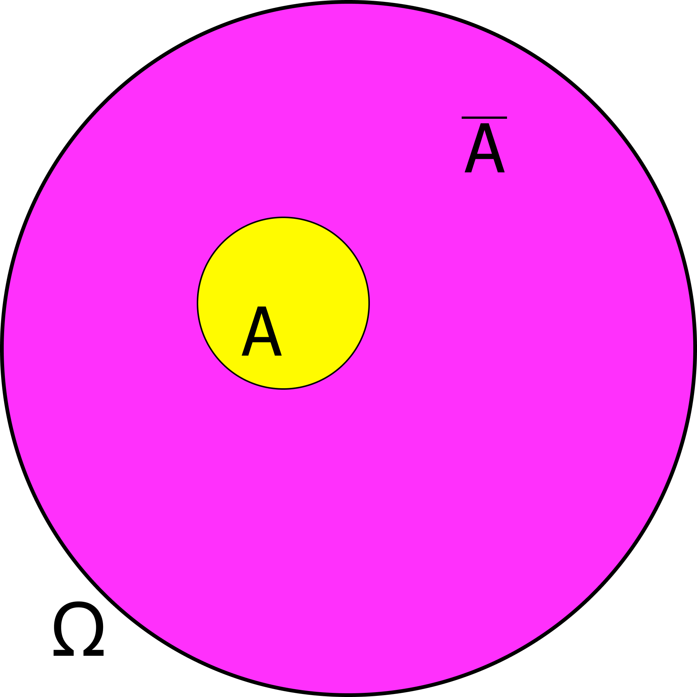

Случайные события
!Результатом случайного опыта всегда является только одно элементарное событие
Пустое событие \(\emptyset\) — случайное событие, не содержащее ни одного элементарного события.
Противоположные события
Случайные события будем обозначать большими латинскими буквами.
Пусть нам дано некоторое случайное событие \(A\).
\(\overline{A} = \Omega \backslash A\). Обратный слэш \(\backslash\) между множествами означает разность множеств.
\(A\cup\overline{A} = \Omega\)
Если \(\overline{A}\) — событие, противоположное \(A\), то \(A\) — событие, противоположное \(\overline{A}\). Такие события называют взаимнопротивоположными.

Вероятность случайного события
Неформально: Вероятность — число, оценивающее возможность наступления данного события. Каждому событию мы будем сопоставлять некоторое вещественно число из отрезка \([0,1]\). Причём достоверному событию всегда соответствует \(1\), а невозможному — \(0\). Сопоставляемое число и будет называться вероятностью случайного события
Для тех кому интересно, ниже более формальное определение вероятности (учить аксиомы не нужно):
Показать пояснение
Аксиомы — исходные свойства, с помощью которых определяется вероятность. В этой модели их принимают без доказательства. Теоремы и правила вычисления затем выводят из них; например, сумма вероятностей элементарных событий равна 1 вследствие аддитивности и равенства \(\mathbb P(\Omega)=1\).
В этом блоке перечислены исходные предположения вероятностной модели.
P.s. Про определение несовместных событий и сложение вероятностей будет дальше.
Вероятность элементарного события и равновозможные события
Почти всегда в школе мы будем обсуждать случаи, когда множество элементарных событий будет конечным.
Показать доказательство
В рассматриваемом конечном пространстве исходов обозначим все элементарные события через \(\omega_1,\ldots,\omega_N\). Они попарно несовместны и в объединении дают достоверное событие \(\Omega\).
Последовательно применяя аддитивность к объединению несовместных событий, получаем
Показать доказательство
По равновозможности вероятность каждого из \(N\) элементарных событий имеет одно и то же значение \(p\). По предыдущей теореме сумма этих вероятностей равна 1, то есть \(Np=1\). Так как \(N\ge1\), получаем \(p=\frac1N\).